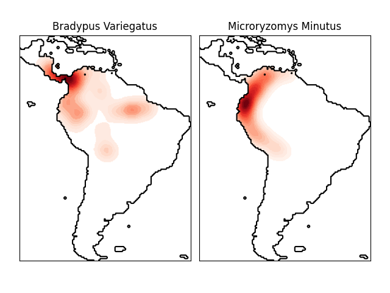

Note
Go to the end to download the full example code or to run this example in your browser via Binder
Kernel Density Estimate of Species Distributions¶
This shows an example of a neighbors-based query (in particular a kernel density estimate) on geospatial data, using a Ball Tree built upon the Haversine distance metric – i.e. distances over points in latitude/longitude. The dataset is provided by Phillips et. al. (2006). If available, the example uses basemap to plot the coast lines and national boundaries of South America.
This example does not perform any learning over the data (see Species distribution modeling for an example of classification based on the attributes in this dataset). It simply shows the kernel density estimate of observed data points in geospatial coordinates.
The two species are:
“Bradypus variegatus” , the Brown-throated Sloth.
“Microryzomys minutus” , also known as the Forest Small Rice Rat, a rodent that lives in Peru, Colombia, Ecuador, Peru, and Venezuela.
References¶

“Maximum entropy modeling of species geographic distributions” S. J. Phillips, R. P. Anderson, R. E. Schapire - Ecological Modelling, 190:231-259, 2006.
- computing KDE in spherical coordinates
- plot coastlines from coverage
- computing KDE in spherical coordinates
- plot coastlines from coverage
# Author: Jake Vanderplas <jakevdp@cs.washington.edu>
#
# License: BSD 3 clause
import matplotlib.pyplot as plt
import numpy as np
from sklearn.datasets import fetch_species_distributions
from sklearn.neighbors import KernelDensity
# if basemap is available, we'll use it.
# otherwise, we'll improvise later...
try:
from mpl_toolkits.basemap import Basemap
basemap = True
except ImportError:
basemap = False
def construct_grids(batch):
"""Construct the map grid from the batch object
Parameters
----------
batch : Batch object
The object returned by :func:`fetch_species_distributions`
Returns
-------
(xgrid, ygrid) : 1-D arrays
The grid corresponding to the values in batch.coverages
"""
# x,y coordinates for corner cells
xmin = batch.x_left_lower_corner + batch.grid_size
xmax = xmin + (batch.Nx * batch.grid_size)
ymin = batch.y_left_lower_corner + batch.grid_size
ymax = ymin + (batch.Ny * batch.grid_size)
# x coordinates of the grid cells
xgrid = np.arange(xmin, xmax, batch.grid_size)
# y coordinates of the grid cells
ygrid = np.arange(ymin, ymax, batch.grid_size)
return (xgrid, ygrid)
# Get matrices/arrays of species IDs and locations
data = fetch_species_distributions()
species_names = ["Bradypus Variegatus", "Microryzomys Minutus"]
Xtrain = np.vstack([data["train"]["dd lat"], data["train"]["dd long"]]).T
ytrain = np.array(
[d.decode("ascii").startswith("micro") for d in data["train"]["species"]],
dtype="int",
)
Xtrain *= np.pi / 180.0 # Convert lat/long to radians
# Set up the data grid for the contour plot
xgrid, ygrid = construct_grids(data)
X, Y = np.meshgrid(xgrid[::5], ygrid[::5][::-1])
land_reference = data.coverages[6][::5, ::5]
land_mask = (land_reference > -9999).ravel()
xy = np.vstack([Y.ravel(), X.ravel()]).T
xy = xy[land_mask]
xy *= np.pi / 180.0
# Plot map of South America with distributions of each species
fig = plt.figure()
fig.subplots_adjust(left=0.05, right=0.95, wspace=0.05)
for i in range(2):
plt.subplot(1, 2, i + 1)
# construct a kernel density estimate of the distribution
print(" - computing KDE in spherical coordinates")
kde = KernelDensity(
bandwidth=0.04, metric="haversine", kernel="gaussian", algorithm="ball_tree"
)
kde.fit(Xtrain[ytrain == i])
# evaluate only on the land: -9999 indicates ocean
Z = np.full(land_mask.shape[0], -9999, dtype="int")
Z[land_mask] = np.exp(kde.score_samples(xy))
Z = Z.reshape(X.shape)
# plot contours of the density
levels = np.linspace(0, Z.max(), 25)
plt.contourf(X, Y, Z, levels=levels, cmap=plt.cm.Reds)
if basemap:
print(" - plot coastlines using basemap")
m = Basemap(
projection="cyl",
llcrnrlat=Y.min(),
urcrnrlat=Y.max(),
llcrnrlon=X.min(),
urcrnrlon=X.max(),
resolution="c",
)
m.drawcoastlines()
m.drawcountries()
else:
print(" - plot coastlines from coverage")
plt.contour(
X, Y, land_reference, levels=[-9998], colors="k", linestyles="solid"
)
plt.xticks([])
plt.yticks([])
plt.title(species_names[i])
plt.show()
Total running time of the script: (0 minutes 2.712 seconds)